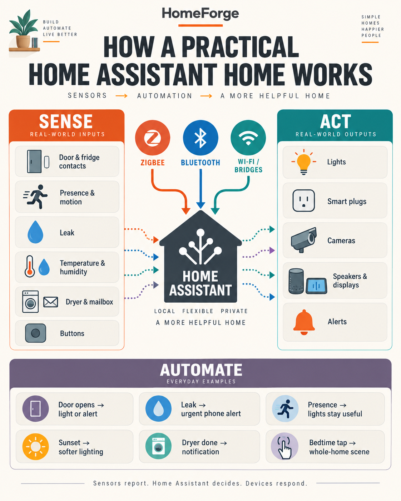

My practical Home Assistant setup: mixed brands, local sensors, and automations that help
My Home Assistant setup did not start as a perfectly planned system from one brand. It grew the way real homes grow: a light here, a sensor there, a camera that solved one problem, and a Raspberry Pi tying it together. Home Assistant is the layer that makes those separate purchases act like one system.
I reviewed the live integration and device registries for this write-up, then removed personal room names, camera details, device identifiers, and presence history before publishing it.

What is connected
My system combines several ecosystems instead of forcing every job into one brand:
- Home Assistant on Raspberry Pi as the main controller, with system monitoring and backups.
- Zigbee Home Automation (ZHA) with a Silicon Labs EZSP coordinator for contact, leak, presence, motion, temperature, and utility sensors.
- Philips Hue for dependable lighting, wall controls, buttons, and motion sensing.
- Tuya, Geeni, and Merkury for a large group of affordable bulbs, plugs, sockets, and cameras.
- Govee Bluetooth and Wi-Fi devices for temperature and humidity, motion, bulbs, strip lights, and smart plugs.
- ESPHome and MQTT for custom devices and state sharing.
- Google Cast speakers and displays for audio and visible status.
- Bambu Lab printer monitoring, an IPP printer, workshop equipment, and a connected grill integration.
- Mobile devices for presence, controls, and notifications.
At the time of inspection, the integration registry showed 51 Tuya devices, 34 Hue devices, 13 ZHA devices, 9 Govee Bluetooth devices, 10 Google Cast devices, and 6 Bambu Lab devices. Those registry counts are a snapshot, and some ecosystems may represent devices differently.
The sensors doing the real work
The lights get attention, but sensors make the system useful.
| Sensor type in my setup | What it reports | What I use it for |
|---|---|---|
| Zigbee contact sensors | Open or closed | Doors and cold-storage monitoring |
| PIR motion sensors | Movement | Fast lighting triggers in pass-through spaces |
| mmWave presence sensor | Continued occupancy | Keeping a frequently used room comfortable while someone is still |
| Water leak sensor | Dry or wet | Early warning near plumbing equipment |
| Govee temperature and humidity sensors | Climate readings | Room comfort and environmental awareness |
| Utility sensors | Cycle or event state | Dryer-finished and mailbox notifications |
| Hue buttons and dimmers | A deliberate press | Physical overrides and whole-home routines |
Several of the exact models I use are easy to find:
- Govee H5075 temperature and humidity sensor
- Govee H5074 temperature and humidity sensor
- Govee H5121 motion sensor
- Govee H5081 smart plug
- Govee H6008 smart bulb
- Govee H6159 LED strip
- SONOFF SNZB-02D temperature and humidity sensor
- Philips Hue motion sensor
- Philips Hue dimmer switch
- Philips Hue smart button
The automations I actually run
These are the useful patterns visible in my automation registry. I am describing the behavior at a safe level rather than publishing household schedules or private entity names.
Safety and maintenance
- A leak detection routine sends an urgent notification.
- A separate low-battery routine watches the leak sensor.
- A global battery check catches low batteries across the system.
- An unavailable-device view helps surface integrations and devices that need attention.
Doors, presence, and lighting
- Door-open routines combine contact state with lighting or notifications.
- A room-presence routine keeps lighting useful when motion alone would time out.
- A sunset routine lowers brightness instead of leaving every light at daytime intensity.
- Night kitchen and landing routines provide low-impact lighting after dark.
- Arrival and departure logic can turn groups of lights on or off.
Daily routines and physical controls
- A bedtime routine handles several devices as one scene.
- An NFC webhook can start that routine without opening the app.
- A family bedtime routine adjusts a common area.
- Global media-volume synchronization keeps speakers predictable.
Utility notifications
- A dryer-done routine sends a notification when the cycle finishes.
- A mailbox routine reports a delivery event.
- Scheduled smart-plug routines control an ice maker.
- Camera night-vision routines change behavior between day and night.
DIY and reliability
- ESP32 state-stream routines refresh and seed shared state through MQTT.
- Disabled test automations remain separate from working routines, which makes experiments easier to undo.
What I would tell a beginner after running this
Mixed brands are fine, but use them intentionally. I like Zigbee for small battery sensors, Hue where lighting reliability matters, Bluetooth for inexpensive climate sensing, and Wi-Fi where the product needs more bandwidth. Home Assistant gives them one control plane.
The least glamorous automations often have the highest value. Leak alerts, low-battery checks, open-door warnings, and appliance-finished notifications earn their keep every week. Fancy dashboards are useful, but they should come after the underlying device names, areas, and automations are dependable.
Cloud-backed integrations can also fail while local devices keep working. My registry showed failed or retrying states for some vendor integrations during inspection. That is a good reason to prefer local control where practical and to make important safety alerts resilient.
If you are starting fresh, use the Home Assistant beginner hardware and automation guide. It turns this larger setup into a small first-room plan you can finish in an afternoon.
HomeForge is reader-supported. Some links are Amazon affiliate links, which means I may earn a commission from qualifying purchases at no extra cost to you. I only link hardware I use or would reasonably choose for the described job.
Get the free Starter Kit →